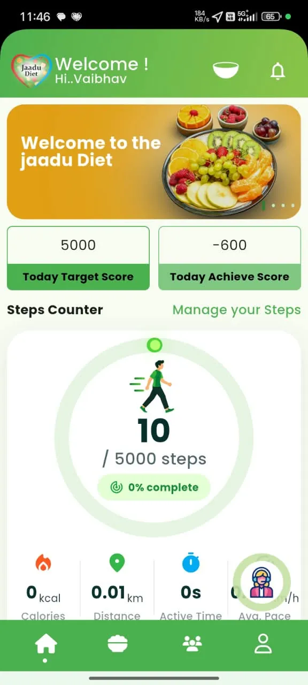
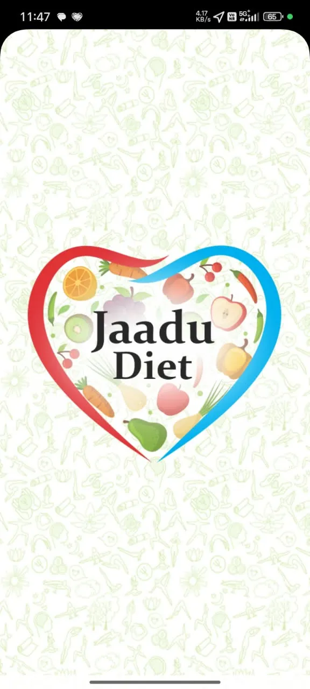
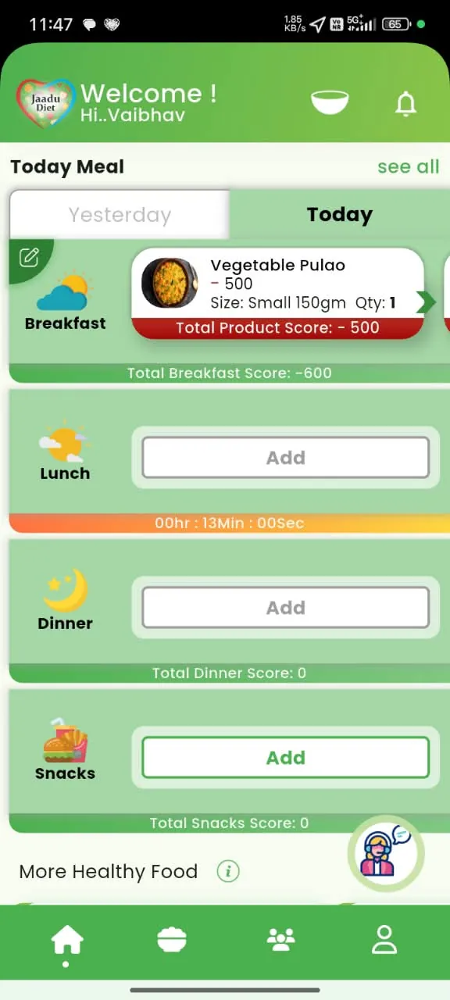
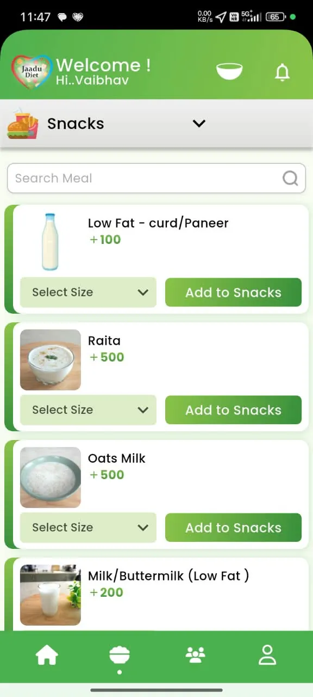
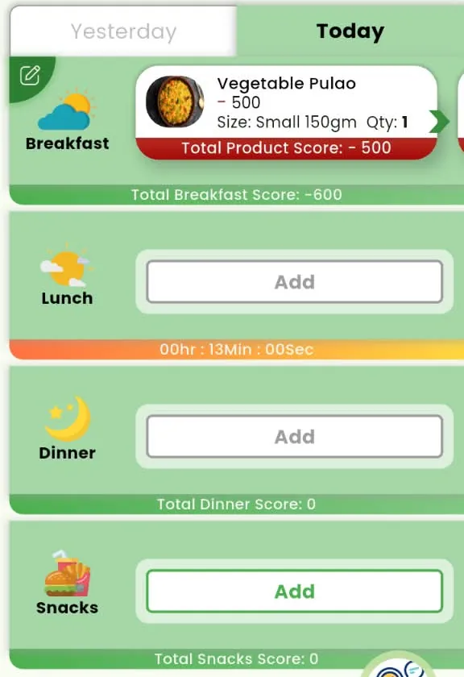
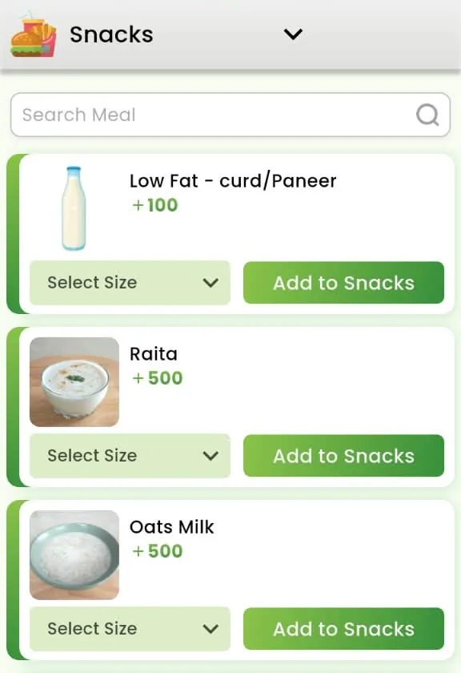
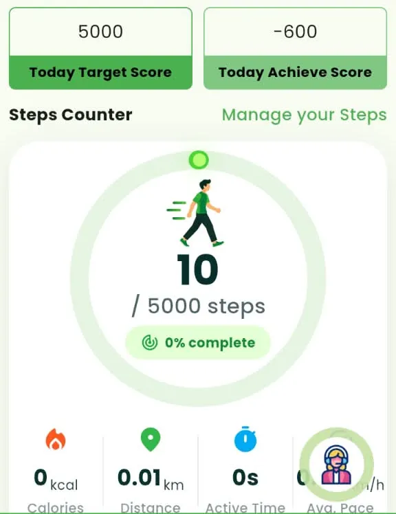

01 Welcome
Your diet companion, in your pocket
Jaadu Diet opens with its heart logo, built from fruit and vegetables. Sign in, add your details, and your daily dashboard is ready.
Diet & activity tracker for Android and iPhone
Jaadu Diet gives you a daily target score and shows how each breakfast, lunch, dinner and snack moves you towards it, with your steps, BMI and history in the same app.

How it works
No complicated calorie maths. Jaadu Diet turns your day into one clear number to aim for.
Add your name and health details such as height and weight. Your BMI is calculated for you.
Each day starts with a target to aim for, for example 5,000 points.
Add what you eat at breakfast, lunch, dinner and snacks. Every food has a score, and your steps are counted too.
Compare today with yesterday, open your summary and see how your days add up.
Try it here
Tap foods below to add them to your plate.
Example foods and scores taken from the Jaadu Diet app. In the app, a food’s total also depends on the size and quantity you pick.
App tour
These are real screens from the app. Swipe, drag, use the arrows or tap a step.



01 Welcome
Jaadu Diet opens with its heart logo, built from fruit and vegetables. Sign in, add your details, and your daily dashboard is ready.
02 Home dashboard
Your Today Target Score sits next to your Today Achieve Score, so you always know where you stand. The step counter below tracks your walking.
03 Today’s meals
Breakfast, lunch, dinner and snacks each have their own slot. Added foods show size, quantity and score, and every meal gets its own total.
04 Food selection
Pick a meal, search the food list, choose a serving size and add it. Each item shows its score, so you know its effect on your day before you add it.
05 Profile & support
Manage your profile and step counter, consult a dietitian, open your summary, or reach the team through Contact Us and Send Feedback.
Personal contact details blurred for privacy.
Inside the app
Four daily slots, item-level scores and a total for every meal, so you can see which meal helped your day and which one pulled it down.

Food photos, serving sizes and a score for each item. Search to find what you ate quickly.

Steps towards your daily goal, plus calories, distance, active time and average pace.

Save your height, weight and health details. Jaadu Diet works out your BMI for you.
See how other members are performing and compare your progress with theirs. A little friendly motivation helps.
Choose Consult a Dietitian from your profile menu, or tap the help assistant on the home screen whenever you need a hand.
Switch between today and yesterday, and open Summary to look back over your records and performance.
Jaadu Diet doesn’t promise overnight results. It helps you see what you eat and how much you move, day after day, and puts a dietitian a tap away when you want guidance.
FAQ
Can’t find what you’re looking for? Use Contact Us or Send Feedback inside the app.
Jaadu Diet is a diet and activity tracking app. You get a daily target score, log what you eat at breakfast, lunch, dinner and snacks, track your steps and review your progress over time.
Every food in the app has its own score, shown before you add it. In the snacks list, for example, Raita shows +500 and Low Fat Curd/Paneer +100, while a small Vegetable Pulao shows −500. As you log meals, your achieved score updates so you can compare it with your daily target.
Yes. The home screen has a step counter showing steps against your goal, along with calories, distance, active time and average pace. You can adjust it from Manage Step Counter in your profile.
Yes. Choose Consult a Dietitian in the profile menu. You can also open the in-app help assistant from the home screen.
Jaadu Diet is available for Android on Google Play and for iPhone on the Apple App Store.
No. Jaadu Diet helps you track daily habits. For medical conditions or specific dietary needs, please speak to your doctor or a qualified professional.
Yes. You can delete your account at any time from the Delete Account option in the profile menu.
Download Jaadu Diet, set your profile, and see your first day’s score take shape.